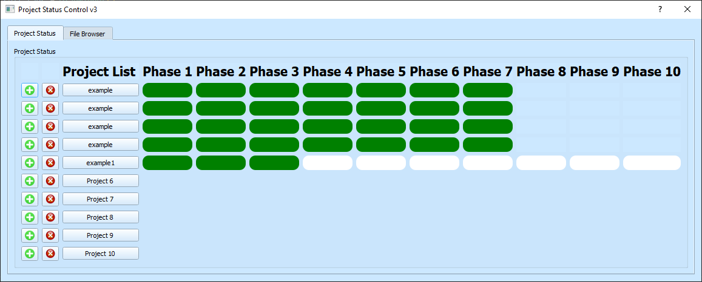

| Company | Position | Location | Years | Description |
| Airbus via OSB AG | Digital Trust Solutions Operations Manager | Ottobrunn, Bavaria | 11.2021-10.2022 |
Management of Operations related to Digital Certificates and Digital Signature Operational Authority Officer and Trusted Agent roles at Airbus PKI Giving Trusted Agent Trainings Python Scripting to automate some tasks and generate a GUI |
| Vires Simulation Technology GmbH | C++ Software Developer | Bad Aibling, Bavaria | 11.2019-10.2021 |
Managing TaskControl and Module Manager components of VTD(Virtual Test Drive) which is written in C++ Bug Fixing, Improvements and Developing new features for VTD I improved my Problem Solving Skills while finding the root cause of the bugs and fixing them Code Reviews and CI Pipeline over Jenkins |
| Istanbul Technical University | Research Assistant | Istanbul, Turkey | 2017-2019 |
I worked on a Heterogeneous Team of Robots project with my supervisor Prof. Dr. Hakan Temeltas. I used C++, Python and Robot Operating System Our task was to combine point clouds from different robots and create a 3D map of the environment. We used Velodyne VLP16 Lidar to get the point clouds. This project also shaped my Master's Thesis. |
| University | Level | Major | Grades in GPA | Years |
| Istanbul Technical University | Master of Science | Mechatronics Engineering | 3.38/4.00 | 2017-2019 |
| Istanbul Technical University | Bachelor of Science | Control and Automation Engineering | 3.25/4.00 | 2012-2017 |
A GUI application to monitor status of multiple projects
